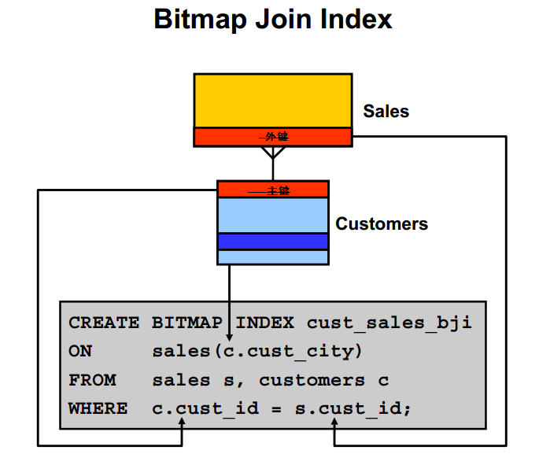

Oracle索引原理精简总结
结合使用整理Oracle的索引，主要权威的来自于Oracle Database Concepts与Oracle Database Performance Tuning Guide
尝试用最少的字数介绍oracle的几种常用索引原理，主要是想简单分析其存储结构来说明其检索方式，和解释为什们某种索引使用与某种场合。（数据结构中最简单的ArrayList和LinkedList的使用场景）。阐述原因只有一个，就是因为其存储结构决定的。
B树索引(默认类型)
存储结构：
B+树，不多描述。和其他几种关系数据库一样，就是根据索引列(一个或多个)来构造一个B+树来存储索引。非叶子节点两个区域：存储下级子节点的值的范围，和到对应子节点地址（典型B+树的结构），主要作用是导航；叶子节点存储索引的键值和行的ROWID。另外，索引的叶子节点间构成了一个双向链表。类似mysql的myisam引擎的辅助索引，也类似mssql的非聚集索引。

检索方式：
典型的平衡树的检索，栋根节点开始导航，选择下一个中间节点，直到找到对应的叶节点。需要说明的是，如果检索的所有列都在是索引中，则不用不用检索表，被称为Fast Full Index Scan；如果检索的列不都包含在索引中，则从树上找到索引列对应的key的叶子节点，需要根据其对应的ROWID，再次访问表，根据ROWID关联到其他属性。当Index Range Scan这种检索索引列的某个范围，则不用从根节点开始导航，直接选定开始的叶节点后，直接从叶节点的双向链表就可以完成。只需从根节点导航一次，找到开始的叶节点。
B+树是一个balance树，所有的叶子都在同一层上，无论根据索引查找表中的哪一条记录，where columnIndex=selectValue中间导航的层数都是相同的，所执行的I/O此次数都是相同的。
适合应用：
因为树状结构的特征，适合于适合与大量的增、删、改（OLTP），因为树状结构节点分裂、合并等很方便；适合高基数的列（唯一值多）的列索引，数据重叠太多，树状就快变为列表了，其查找功能就不能体现了。
反向键索引
存储结构：
反向键索引是一种能够将索引键‘反转’的B*Tree索引。通过把键‘反转’，本来连续的键值变得非常‘离散’。当大量数据并行插入的时候，把本来一个索引块上的连续键值分散到不同的索引块上，减少了索引块的争用。
检索方式：
和普通的B树索引没有差别。
使用场景
因为存储结构同B树索引，使用场合也同B树索引。但是如WHERE?COL1?>?888这样的Index Range Scan不能用反向索引，因为存储结构决定这种本来连续的已经反向的不连续了。
位图索引bitmap
存储结构
类似于java的BitSet采用最简单的方式存储某个值在哪些行出现，哪些行不出现。
如在列性别上建索引。
| Value | Row 1 | Row 2 | Row 3 | Row 4 | Row 5 | Row 6 | Row 7 |
|---|---|---|---|---|---|---|---|
| M | 1 | 1 | 1 | 1 | |||
| F | 1 | 1 | 1 |
在F行上Row12 row6 row7为1表示这些行的索引列取值是F。搜索一条记录的时候。
**检索方式
当发出where sex=’F’ 这样的SQL语句时，会去搜索F所在的索引条目，然后扫描该索引条目中的bitmap里所有的bit位。第一个bit位为 1，则说明第一条记录上的C1值为01，于是返回第一条记录所在的ROWID（根据该索引条目里记录的start ROWID加上行号得到该记录所在的ROWID）。然后根据ROWID关联其他属性。
适用应用：
适用于基数的列(low?cardinality)，因为存储的索引块会比较少。因此不适用创建复合索引，复合索引包含多列，它们的组合一般来说已经是高基数。
适合读操作多，写操作少的，比较适合用在数据仓库系统里，不适合用在OLTP系统。因为与B*树索引（更改操作仅锁定一行）不同的是，如果一个会话更新了位图索引所索引的数据，会把该位图索引条 目指向所有的行都锁定。无法锁定一个位图索引条目中的一位；而是会锁定整个位图索引条目。倘若有其它会话也要更改同样的这个索引条目指向的行，阻塞。而且更改一个记录涉及到把原记录的bitmap对应的bit设置成0，新值所在的bitmap的bit值设置为1，这样两条记录的操作。
位图连接索引
在创建位图连接索引时,它是两个表或多个表之间的索引值的连接,连接的结果存储在索引自身中。通过链接使用B表的列来对A表建立索引。本质上还是位图索引。根据Sales对应的cust_id和Customers上cust_id连接在customers表上建立索引。其实就是在customers表上的以个伪列。

检索方式
询时通过扫描索引(避免两表或多表全表扫描)来获取数据。能够消除查询中的连接操作、因为它实际上已经将连接的结果集保存在索引当中了。
使用要求：
创建位图连接索引时WHERE 子句中的关联条件列必须是主键或唯一约束。
基于函数的索引
存储结构
函索索引计算函数或者表达式的值，并保存到索引中。创建的函数索引可以是B树的，也可以是Bitmap的。
检索方式
当检索语句中包含该函数或者表达式，会使用该函数索引。Inert update等写操作时要更新索引中的函数值。
适用应用：
用这种索引能提前计算并存储复杂的值，因此可以用来加快现有应用的查询速度，而且不用修改应用中的任何逻辑或查询。
索引组织表
存储结构
以B树的方式存储表的数据。索引组织表的数据是根据主键排序后的顺序进行排列的，这样就提高了访问的速度。类似于mysql的innodb存储引擎的主索引。
检索方式

检索方式
定位到主键就定位到了存储位置的数据行。如果直接是根据主键定位则该存储方式也可以理解为一种索引（mssql中聚集索引也是这个意思），如果根据其他列的查询，可以结合在其他列上建立辅助索引（和mysql的Innodb辅助索引是几乎完全相同的思路）
适用应用：
对于总是通过对主键的精确匹配或范围扫描进行访问的表，直接根据范围定位存储位置，就可以获取对应行的数据。因为索引项和数据存储在一起，无论是基于主键的等值查询还是范围查询都能大大节省磁盘访问时间。ROWID伪列是基于主键值的逻辑rowid，而不是物理rowid，即使表被重新组织过，造成了基表行的迁移，二级索引仍然可用，不需要重建。